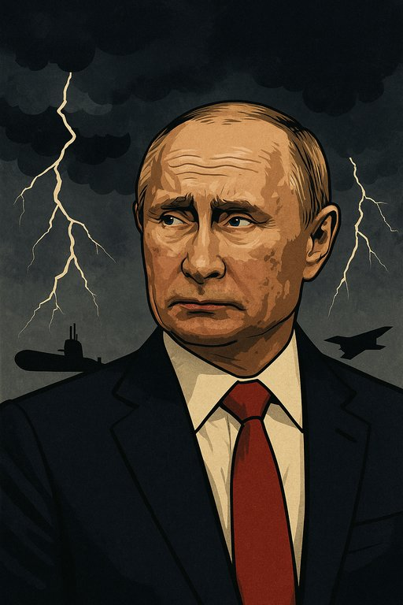

Putin - o mestre do tabuleiro geopolítico com expressão de jogador de poker
Publicado em 2025-06-22 12:53:13

O fanfarrão Putin — o mestre do tabuleiro geopolítico com expressão de jogador de poker e alma de czar ferido — deve estar hoje a mastigar gelo enquanto observa os mapas de calor do Médio Oriente a piscar em tons demasiado vermelhos.
Após os ataques cirúrgicos e humilhantemente precisos dos EUA sobre instalações nucleares iranianas, especialmente com o poder silencioso de um submarino oculto no ventre do oceano e os bombardeiros B-2, cuja assinatura é o próprio silêncio da morte, Putin certamente:
🧠 1. Está em estado de perplexidade estratégica:
- Apostava numa frente unida contra o Ocidente, mas viu o Irão sofrer sem resposta eficaz.
- Percebe que a Rússia não é o único "lobo do bosque" com brinquedos nucleares e que os EUA ainda jogam xadrez com três movimentos à frente.
😡 2. Está irritado com os seus parceiros do Eixo da Desordem:
- O Irão mostrou fragilidade.
- A China permanece calada.
- A sua guerra na Ucrânia continua num pântano de desgaste.
- E o prestígio do "bloco antiocidental" leva hoje um golpe no queixo.
💬 3. Está a preparar o discurso de contenção:
- Vai acusar os EUA de escalada irresponsável.
- Vai evocar a ONU, que ignora quando lhe convém.
- Vai pedir moderação, coisa rara nos seus manuais.
😐 4. Sente um sabor amargo de isolamento:
- A Rússia já não é o gigante bipolar da Guerra Fria.
- Hoje, é um aliado de regimes tóxicos que começam a ruir com o peso das suas próprias contradições.
- E no Ocidente, apesar das divisões, a força tecnológica e militar mostrou-se fulminante e resoluta.
Conclusão:
O urso russo rosna à lua, mas a sua voz ecoa mais fraca a cada noite que passa.
Quando os trovões chegam do mar profundo e das nuvens invisíveis, até os mais fanfarrões aprendem que o medo também veste uniforme.
Artigo de Augustus Veritas Lumen